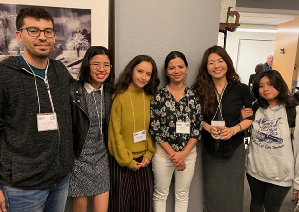
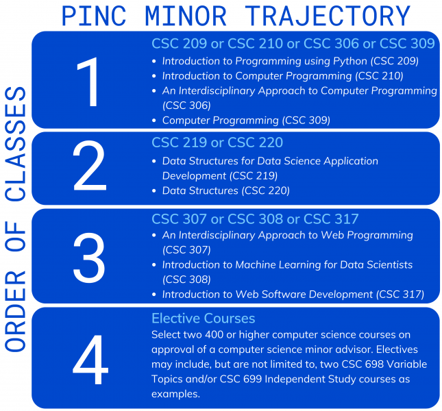

PINC Minor in Computing Applications
Program Overview
PINC is designed as a program for life science majors (biology, chemistry, and/or biochemistry), and consists of 15 units of computer science coursework (5 courses spread over 4 semesters) that will allow the students to earn a Minor in Computing Applications.
